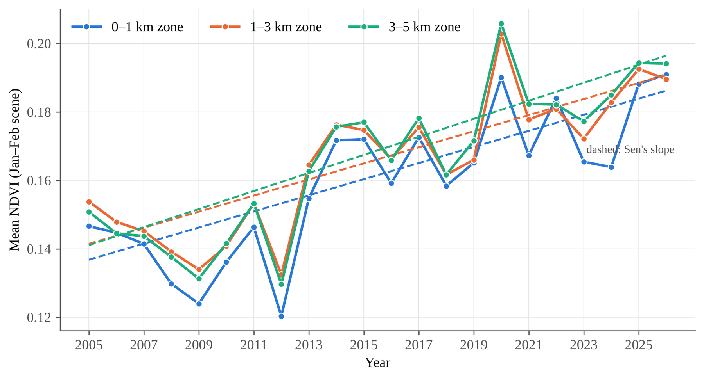
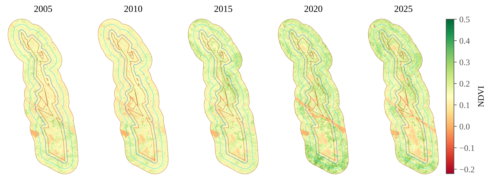
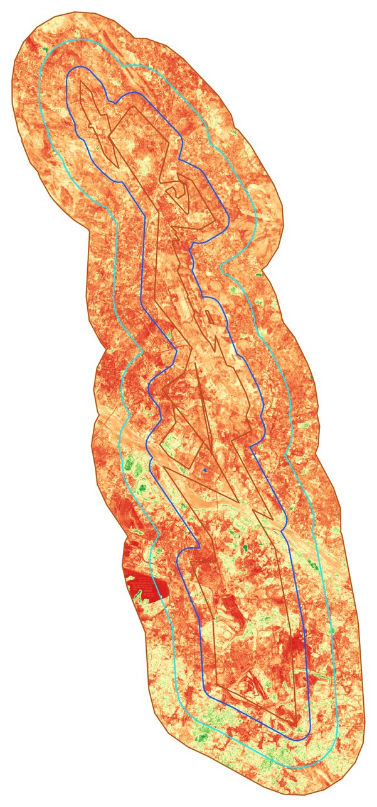
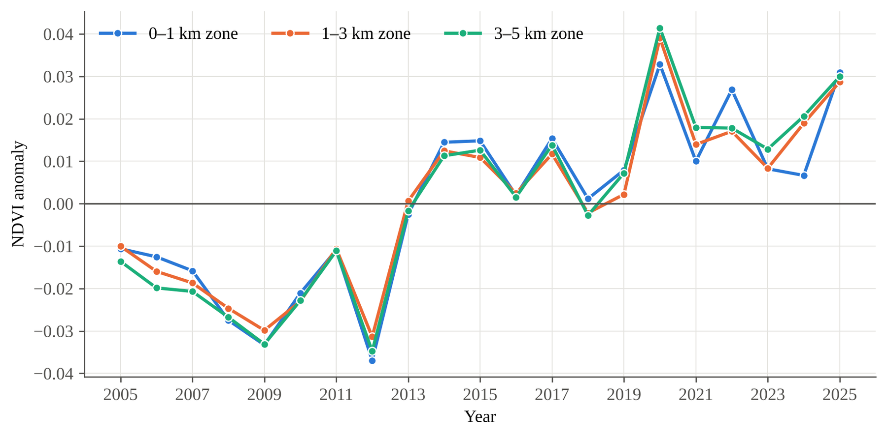
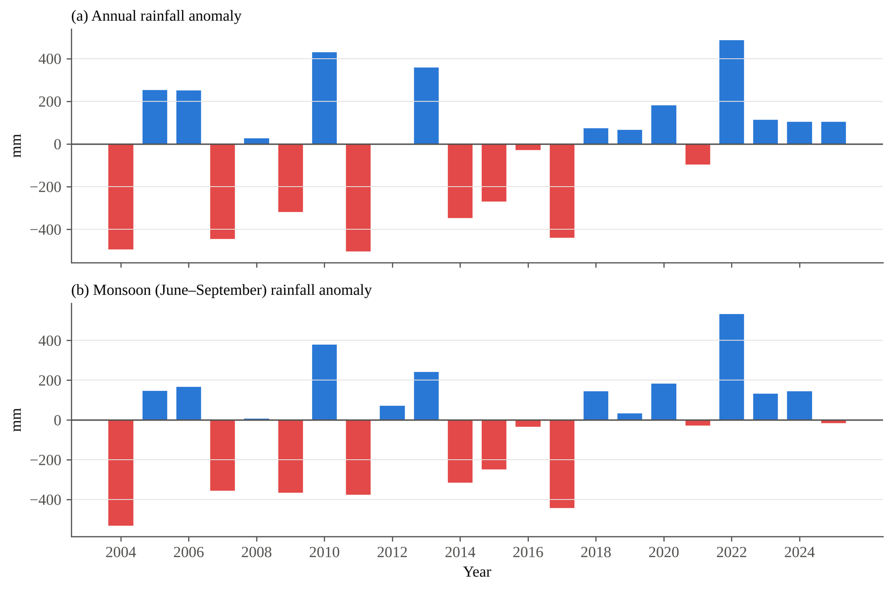
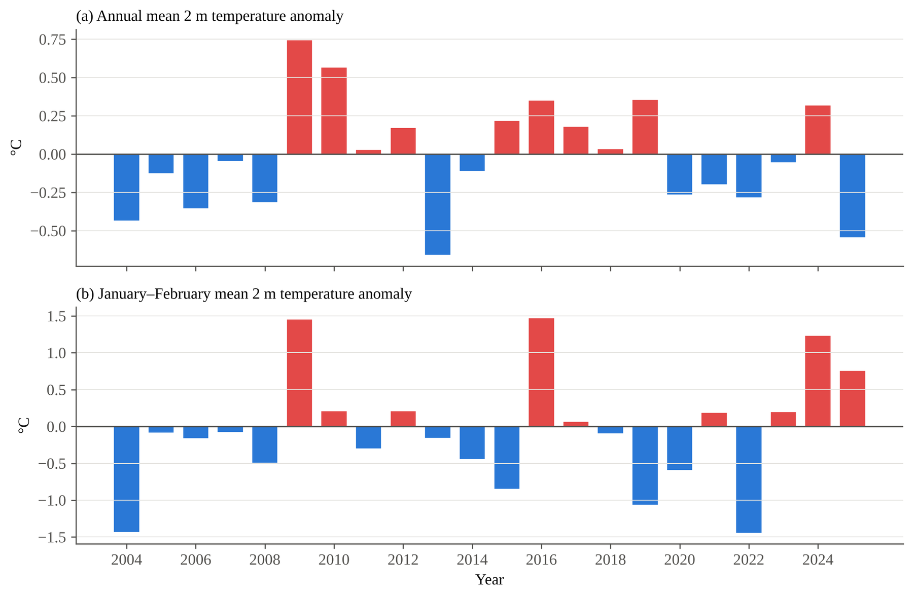
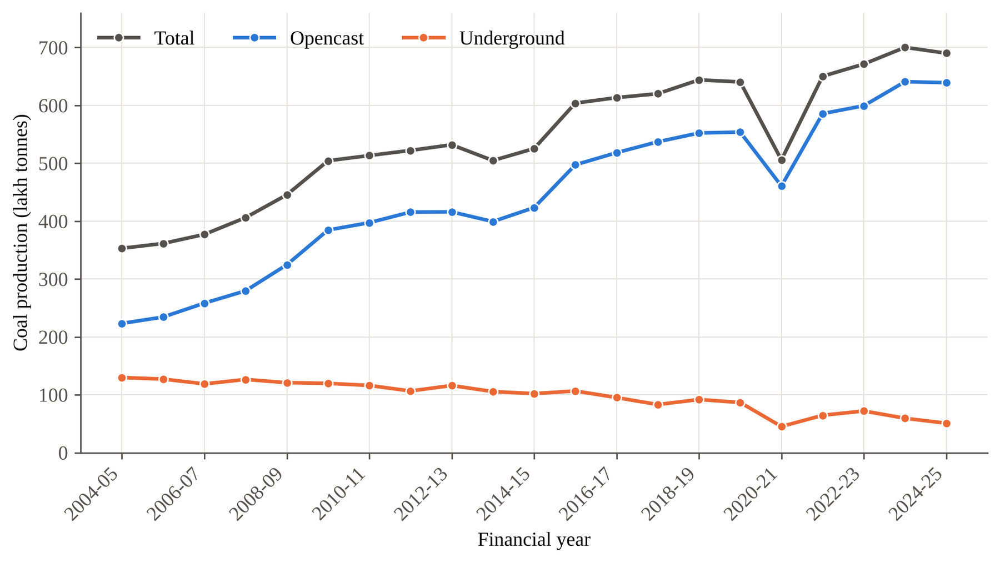
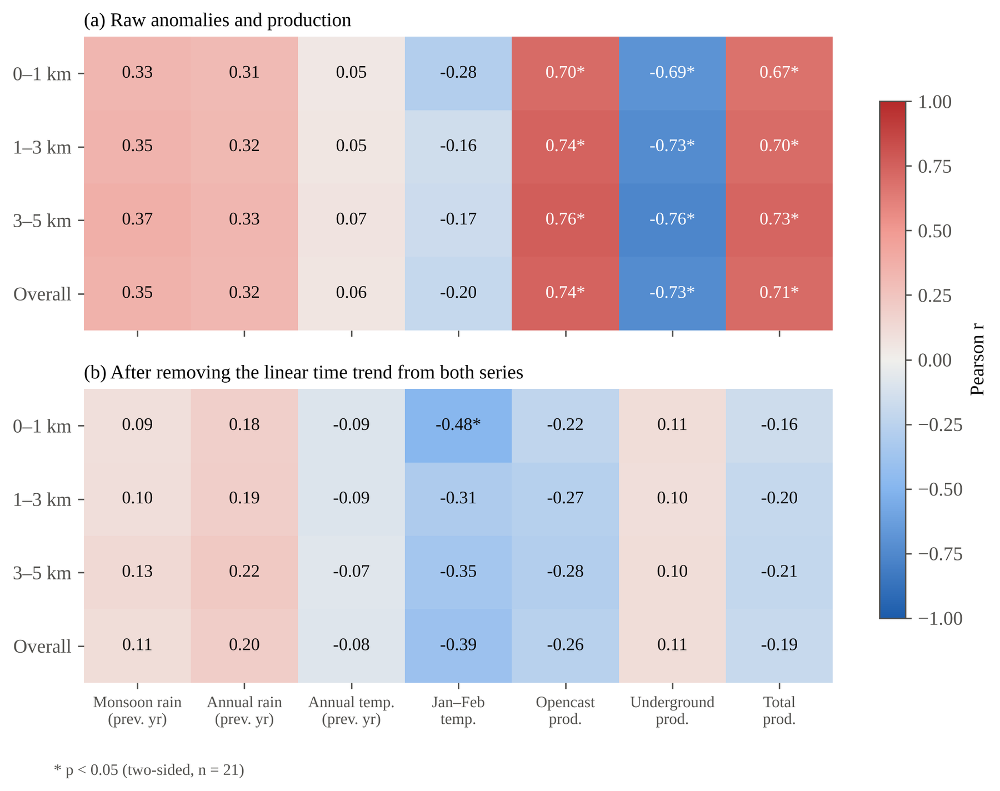
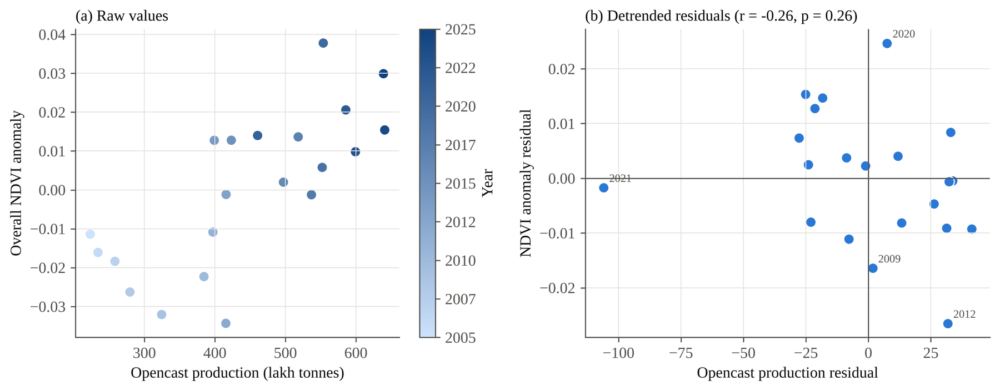

Chapter 5
Results
The greening is clear. The climate record does not trend. The production link disappears once time is accounted for.
NDVI by zone
The three zones move together from year to year, so most short-term change is regional rather than local to the mines. The 0–1 km zone was the least green in 19 of the 22 years; the exceptions were 2006 (when the 3–5 km zone was marginally lower), 2022 and 2026. Over the whole period it averaged 0.1587, against 0.1650 and 0.1657 for the outer zones.
NDVI fell from 2005 to 2009, recovered in 2010 and 2011, dropped sharply in 2012 and then rose to a higher level from 2013. The highest values came in 2020 (0.190, 0.203 and 0.206) and the lowest in 2012 (0.120, 0.132 and 0.130). The 2022–2026 average was 30%, 27% and 32% above the 2005–2009 average in the three zones.

Trend tests
| Zone | S | τ | Z | p | Sen's slope (per year) | Lag-1 r | p, pre-whitened |
|---|---|---|---|---|---|---|---|
| 0–1 km | 131 | 0.567 | 3.67 | 0.00025 | 0.002354 | 0.68 | 0.075 |
| 1–3 km | 139 | 0.602 | 3.89 | 0.00010 | 0.002351 | 0.71 | 0.050 |
| 3–5 km | 149 | 0.645 | 4.17 | 0.00003 | 0.002638 | 0.75 | 0.065 |
| Overall | 145 | 0.628 | 4.06 | 0.00005 | 0.002486 | 0.73 | 0.050 |
All three zones show a significant upward trend. Kendall's τ rises with distance from the mines, from 0.567 to 0.645, so the trend is most consistent in the outer zone. Sen's slope is highest there too, about 0.026 NDVI per decade.
The Hamed–Rao correction left the p-values unchanged. The stricter pre-whitening test raised them to 0.050–0.075. The direction of change is not in doubt, but with only 22 years the formal significance depends on how serial correlation is treated. Including the 2004 scene still gives significant trends, with slopes of 0.00208, 0.00220 and 0.00246 per year.
Spatial pattern
Lease interiors, pits and dumps stay low in every year. The outer zones, especially in the south, turn greener after 2015. The orange band crossing the middle in 2020 and 2025 is the Godavari channel, which probably held more water on those scene dates.



NDVI anomalies
For the area as a whole, every year from 2005 to 2013 was below the 2005–2025 mean, and every year from 2014 to 2025 was above it except 2018. That split is what a rising series always looks like when measured from a fixed mean. The largest negative anomalies were 2012 (−0.037 in the 0–1 km zone) and 2009 (−0.033); the largest positive were 2020 (+0.033 to +0.041) and 2025 (+0.029 to +0.031). The 0–1 km zone had the deepest drops in 2008, 2009 and 2012.

Climate
Monsoon rainfall swung widely, from 455 mm (2004) and 543 mm (2017) to 1368 mm (2010) and 1522 mm (2022), but neither annual nor monsoon rainfall had a significant trend (Mann–Kendall p = 0.20 and 0.24). Annual temperature ranged from 26.9 °C (2013) to 28.3 °C (2009), and January–February temperature from 23.0 °C (2022) to 25.9 °C (2009 and 2016); neither trended (p = 0.78 and 0.54).
A climate record with no trend cannot explain a 20-year rise in NDVI. It can only explain the ups and downs around it.


Coal production
Total output roughly doubled, from 353.03 lakh tonnes in 2004–05 to a peak of 700.21 in 2023–24, with one drop to 505.80 in 2020–21, the year of the COVID-19 lockdowns. Opencast output rose by about 20.5 lakh tonnes a year and underground output fell by about 3.6 (Sen's slope, both p < 0.001). Opencast output correlates with calendar year at r = 0.97, underground at r = −0.94.

Raw and detrended correlations
On the raw series, production gave large, highly significant correlations with NDVI, and rainfall gave modest, non-significant ones. Read literally, the production values say that more opencast coal goes with greener land and that the zone farthest from the mines is affected most. Neither makes physical sense. Panel (a) of Figure 5.10 shows why: the points are ordered by year.

| Driver | r, raw | p, raw | r, detrended | p, detrended |
|---|---|---|---|---|
| Opencast production | 0.70 to 0.76 | < 0.001 | −0.22 to −0.28 | 0.22 to 0.34 |
| Underground production | −0.69 to −0.76 | < 0.001 | 0.10 to 0.11 | ≥ 0.64 |
| Total production | 0.67 to 0.73 | < 0.001 | −0.16 to −0.21 | ≥ 0.36 |
| Monsoon rainfall (previous year) | 0.33 to 0.37 | 0.10 to 0.14 | 0.09 to 0.13 | ≥ 0.58 |
| Annual rainfall (previous year) | 0.31 to 0.33 | 0.14 to 0.17 | 0.18 to 0.22 | ≥ 0.34 |
| Annual temperature (previous year) | 0.05 to 0.07 | ≥ 0.76 | −0.07 to −0.09 | ≥ 0.71 |
| January–February temperature | −0.16 to −0.28 | ≥ 0.21 | −0.31 to −0.48 | 0.026 (0–1 km) to 0.17 |
After detrending, every production correlation collapsed and lost significance. First differences gave the same answer (|r| ≤ 0.34, p ≥ 0.14). The rainfall correlations weakened too, because part of the raw link came from wetter monsoons after 2018 coinciding with the greener late years.

One relationship grew stronger after detrending: January–February temperature in the 0–1 km zone (r = −0.48, p = 0.026; r = −0.55, p = 0.013 in first differences). A warm dry season dries out vegetation faster, and the zone with the most bare ground has the least buffer. The years fit: 2009 had the warmest January–February and the second-lowest NDVI, and 2022, the coolest, was the one year the 0–1 km zone was greener than both outer zones.
Treat the temperature result as a lead
28 detrended correlations were tested. With a Bonferroni correction the threshold becomes p < 0.0018, and the temperature result does not pass it.
Regression
| Predictors | R² | Adjusted R² | Notes |
|---|---|---|---|
| Year | 0.652 | 0.633 | Slope 0.0026 NDVI per year, p < 0.001 |
| Monsoon rainfall (previous year) | 0.124 | 0.078 | Not significant (p = 0.12) |
| Opencast production | 0.548 | 0.524 | Significant alone (p < 0.001) |
| Year + monsoon rainfall | 0.655 | 0.617 | Rainfall adds 0.003 to R² (p = 0.65) |
| Year + rainfall + opencast | 0.676 | 0.618 | Opencast coefficient negative, p = 0.32 |
Opencast production alone explains 55% of NDVI variance, but year alone explains 65%. Once year is in the model, neither rainfall nor production adds anything, and adjusted R² falls from 0.633 to 0.618. Production behaves as a stand-in for time.
Last updated November 2026. Landsat data courtesy of USGS. Rainfall from IMD, temperature from ECMWF ERA5, lease boundaries from TGRAC, production from SCCL annual reports.